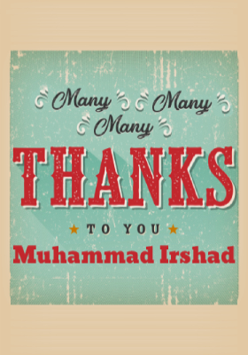
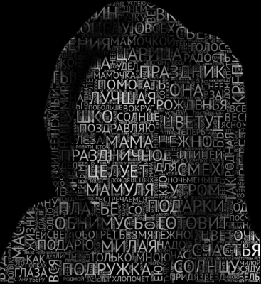
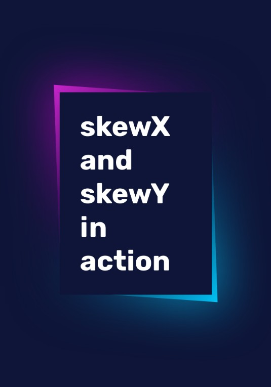
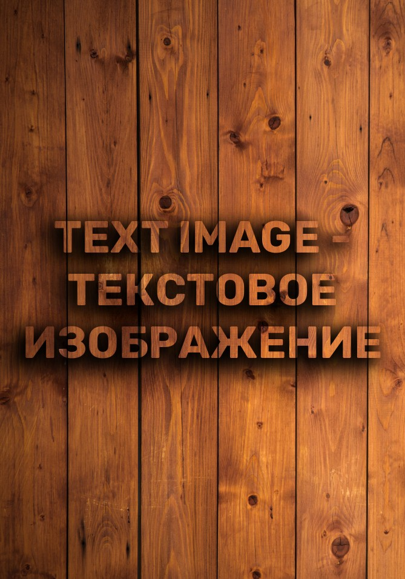
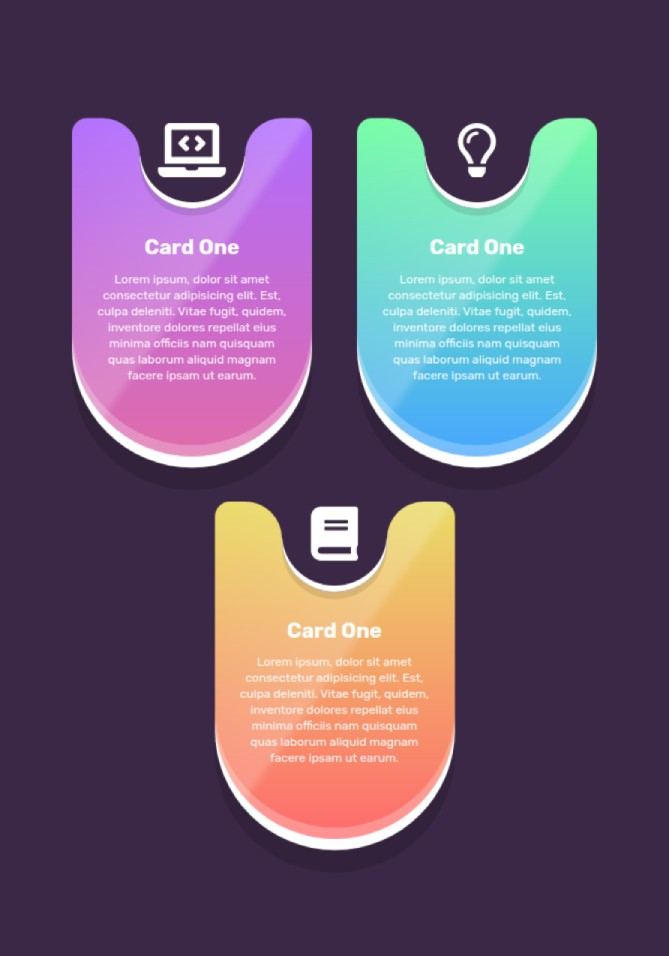

00
Card Zero
MANY MANY THANKS
TO THIS MASTER ↴
Youtube
Link

01
Card One
Text overlaid on image | Текст наложенный на изображение
demo
source
02
Card Two
Rotation cards based on mouse movement | Карточки с поворотом в зависимости от
движения мыши
demo
source
03
Card Three
Bank card with a spread | Банковская карта с разворотом
demo
source
04
Card Four
Glowing neon buttons | Светящиеся неоновые кнопки
demo
source
05
Card Five
Loader - neomorphic sliders | Загрузчик - неоморфные ползунки
demo
source
06
Card Six
Transition from one image to another with a vertical line | Переход одного
изображения в другое вертикальной линией
demo
source
07
Card Seven
Signal lamp for valid input | Сигнальная лампа для валидного input
demo
source
08
Card Eight
360-degree object viewer | 360-градусный просмотрщик объектов
demo
source
09
Card Nine
Positional circular filling of the card with color | Позиционное круговое
заполнение карточки цветом
demo
source
10
Card Ten
Audio player | Аудио плеер
demo
source
11
Card Eleven
Video in text | Видео в тексте
demo
source
12
Card Twelve
Rotating images 3d gallery | Вращающиеся изображения 3d галерея
demo
source
13
Card Thirteen
Loader - 3D circles with wavy animation | Загрузчик - 3D круги с волнистой
анимацией
demo
source
14
Card Fourteen
Button-diverging wave circles when pressed | Кнопка - расходящиеся волной круги по
нажатию
demo
source
15
Card Fiveteen
The text is glowing and flickering | Текст светящий и мерцающий
demo
source
16
Card Sixteen
Gradient glow under blocks | Градиентное свечение под блоками
demo
source
17
Card Seventeen
Product card 3D | Карточка товара 3D
demo
source
18
Card Eighteen
The block comes out from the baffle on hover | Блок выходит из-за перегородки при
наведении
demo
source
19
Card Nineteen
List To Do | Список дел
demo
source
20
Card Twenteen
Tilt calculator | Калькулятор с наклоном
demo
source
21
Card Twenty One
Scattering text into
letters and picking back into text | Разбрасывание текста на буквы и собирание обратно в текст
demo
source
22
Card Twenty Two
Menu - slider | Меню - слайдер
demo
source
23
Card Twenty Three
Foldable 3D post card - Hover CSS Effect | Раскрывающаяся 3D открытка - Hover CSS
Effect
demo
source
24
Card Twenty Four
Wrap text around an image or anything | Обернуть текст вокруг изображения или чего
угодно
demo
source
25
Card Twenty Five
Smoking letters | Дымящие буквы
demo
source
26
Card Twenty Six
Hover effect with overlap | Эффект наведения с перекрытием
demo
source
27
Card Twenty Seven
Steclomorphism and glowing dynamic pointer | Cтекломорфизм и светящийся
динамический указатель
demo
source
28
Card Twenty Eight
Drag and Drop Menu | Перетаскиваемое меню
demo
source
29
Card Twenty Nine
Scroll effect: wave parallax | Эффект прокрутки: волнообразный параллакс
demo
source
30
Card Thirty
Switching the theme: light - dark | Переключение темы: светлая - тёмная
demo
source
31
Card Thirty One
Switcher round | Круглый переключатель
demo
source
32
Card Thirty Two
Water drops | Капли воды
demo
source
33
Card Thirty Three
Loader as liquid in a circle | Загрузчик в виде жидкости по кругу
demo
source
34
Card Thirty Four
SVG stroke animation | SVG анимация обводки
demo
source

35
Card Thirty Five
Acute angle | Острый угол
demo
source
36
Card Thirty Six
3D book | 3D книга
demo
source
37
Card Thirty Seven
Split video at scroll | Разделить видео при прокрутке
demo
source

38
Card Thirty Eight
Text image | Текстовое изображение
demo
source
39
Card Thirty Nine
Primitive figure 3d | Простая фигура 3d
demo
source
40
Card Forty
Image and video inside the figure | Изображение и видео внутри фигуры (рисунка)
demo
source
41
Card Forty One
CSS - grid adaptive blocks | CSS - grid адаптивные блоки
demo
source
42
Card Forty Two
Corner Text Parallax | Угловой текст parallax
demo
source
43
Card Forty Three
Bubbles particles | Пузырьковые частицы
demo
source
44
Card Forty Four
Animate circle text | Анимированный кругом текст
demo
source
45
Card Forty Five
Svg stroke animation | SVG штриховая анимация
demo
source
46
Card Forty Six
Slider in the frame (phone) | Слайдер в рамке (телефона)
demo
source
47
Card Forty Seven
The effect of connecting drops | Эффект соединения капель
demo
source
48
Card Forty Eight
SVG elastic animation | SVG эластичная анимация
demo
source
49
Card Forty Nine
Neon light button animation - frame by comet | Неоновая анимация на кнопке - рамка
кометой
demo
source
50
Card Fifty
Rating indicator - UI neomorphism | Рейтинг индикатор - UI неоморфизм
demo
source
51
Card Fifty One
Laser saber | Лазерный меч
demo
source
52
Card Fifty Two
Laser saber | Лазерный меч
demo
source

53
Card Fifty Three
Amazing cards with shadows and curves | Удивительные карты с тенями и изгибами
demo
source
54
Card Fifty Four
Menu in the form of a 3D visor | Меню в виде 3D козырька
demo
source
55
Card Fifty Five
Mobile menu appearing from a stick and a circle | Мобильное меню появляющееся из
палки и круга
demo
source
56
Card Fifty Six
Admin Dashboard + Charts | Панель администратора + Диаграммы
demo
source
57
Card Fifty Seven
Compare images | Сравнивание изображений
demo
source
58
Card Fifty Eight
3D cubes year | 3D кубы с годом
demo
source
59
Card Fifty Nine
Menu with circle indicator | Меню с круговым индикатором
demo
source
60
Accordion Images
Accordion images | Гармошка изображений
demo
source
61
Drag and drop columns
Drag and drop at columns | Drag and drop в колонки
demo
source
62
Slider vertical
Слайдер вертикальный | Slider vertical
demo
source
63
Colored squares on hover
Цветные квадраты при наведении | Colored squares on hover
demo
source
64
Aim Training
Aim Training | Тренировка точности на скорость
demo
source